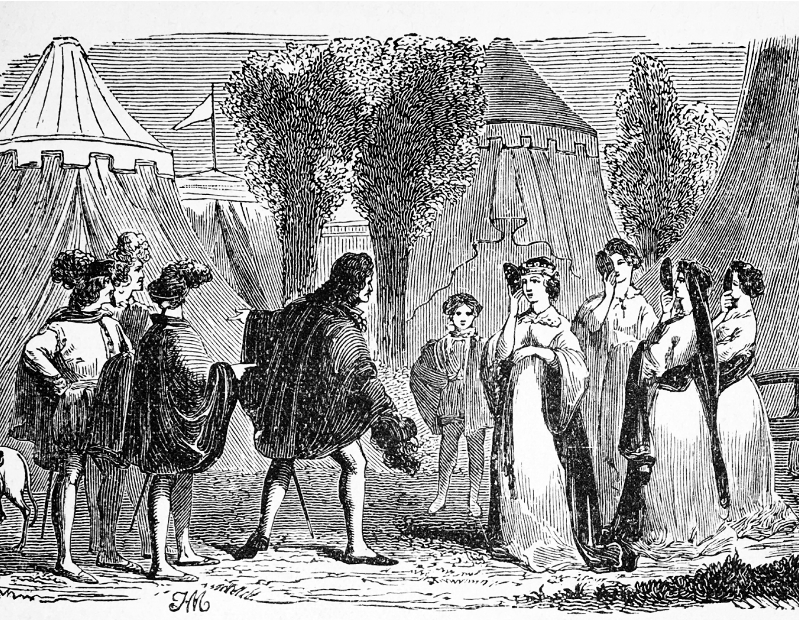

Summary
The King of Navarre and his three lords, Berowne, Longaville, and Dumaine, swear an oath to scholarship, which includes fasting and avoiding contact with women for three years. They receive a letter from Don Armado, a Spaniard visiting the King’s court, telling them that he has caught Costard, a fool, and Jaquenetta, a country wench, consorting in the park. The King announces Costard’s sentence, and he and the lords go off to begin their oath.
Don Armado confesses to Moth, his page, that he has fallen in love with Jaquenetta. He writes a letter that he asks Costard to deliver.
Meanwhile, the Princess of France has arrived to visit the King. Because of his oath, the King cannot receive the Princess and her party at his court; he and his lords must visit them at their camp outside the castle. The three lords fall in love with the three ladies, as does the King with the Princess. Berowne gives Costard a letter to deliver to Rosaline, but Costard accidentally switches it with the letter from Don Armado to Jaquenetta. When he gives Berowne’s letter to Jaquenetta, she brings it to the learned Holofernes and Sir Nathaniel to read for her. They tell her that the letter was meant for someone else and to deliver it to the King.
Berowne watches the King from a hiding spot as he reads about his love for the Princess. Longaville enters, and the King hides as well; he and Berowne observe Longaville reading of his love for Maria Dumaine enters, Longaville hides, and all three see Dumaine reading an ode he has written to Katherine. Longaville advances and tells Dumaine that he is not alone in love. The King then advances and scolds the two men for breaking their oath. Berowne advances and reveals that the King is in love as well. Jaquenetta arrives and gives Berowne the letter, which he rips up. However, Dumaine picks up a piece of the letter with Berowne’s name on it, and Berowne confesses that he is in love as well. The four men decide to court their women.
The King and his lords arrive at the Princess’s pavilion dressed as Muscovites. The women heed Boyet’s prior warnings and decide to switch favors, so that the men will mistake them for each other. After the men leave and reappear as themselves, the women reveal their prank. They all watch a show of the Nine Worthies, performed by Don Armado, Sir Nathaniel, and Holofernes. A messenger arrives to tell the Princess that her father has died, and she prepares to return to France. The women tell their suitors to seek them again in a year, and the play ends with their departure.
 Love’s Labour’s Lost, early comedy in five acts by William Shakespeare, written sometime between 1588 and 1597, more likely in the early 1590s, and published in a quarto edition in 1598, with a title page suggesting that an earlier quarto had been lost. The 1598 quarto was printed seemingly from an authorial working draft showing signs of revision.
Love’s Labour’s Lost, early comedy in five acts by William Shakespeare, written sometime between 1588 and 1597, more likely in the early 1590s, and published in a quarto edition in 1598, with a title page suggesting that an earlier quarto had been lost. The 1598 quarto was printed seemingly from an authorial working draft showing signs of revision.
Background
Background from Encyclopedia Britannica.
Show
The Florence-Carlton Shakespeare Company's performance of Love's Labour's Lost from 2021.